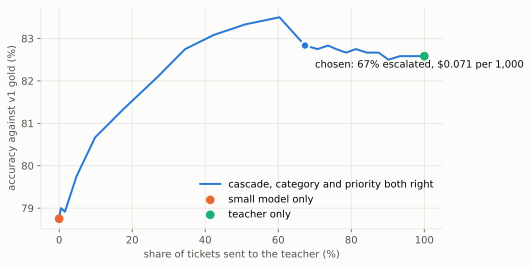
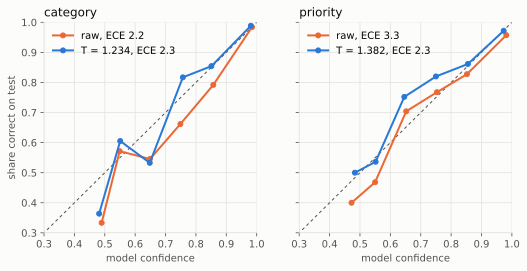

Pick an email
Each answer below is what the model wrote when it was run on this email, read back from the result files. The fourth button is not a support email at all.
Paste an email
In tray
Small model answerline = threshold
Kept 0
Nothing sorted yet.
To the teacher 0
Nothing sent up yet.
Teacher cost
Each email sent up costs one call to the bigger model. The count below covers the emails you have opened on this page.
- Opened
- 0
- Sent up
- 0
- Spent
- $0.000000
Per 1,000 tickets
The numbers

